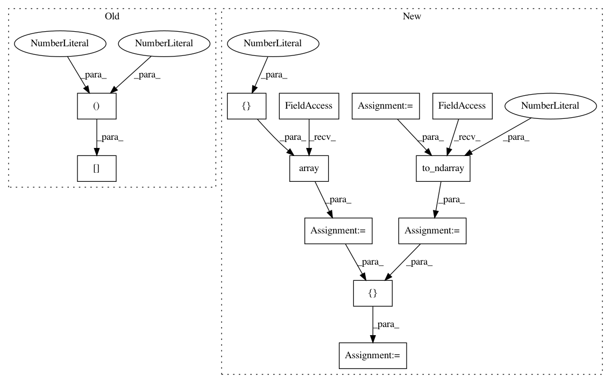

5f64204ab895dee4c4a706879f89d714237a5057,geomstats/minkowski_space.py,MinkowskiMetric,inner_product_matrix,#MinkowskiMetric#Any#,54
Before Change
Inner product matrix, independent of the base point.
inner_prod_mat = gs.eye(self.dimension)
inner_prod_mat[0, 0] = -1
return inner_prod_mat
def exp(self, tangent_vec, base_point):
After Change
Inner product matrix, independent of the base point.
inner_prod_mat = gs.eye(self.dimension-1, self.dimension-1)
first_row = gs.array([0.] * (self.dimension - 1))
first_row = gs.to_ndarray(first_row, to_ndim=2, axis=1)
inner_prod_mat = gs.vstack([gs.transpose(first_row),
inner_prod_mat])
first_column = gs.array([-1.] + [0.] * (self.dimension - 1))
first_column = gs.to_ndarray(first_column, to_ndim=2, axis=1)
inner_prod_mat = gs.hstack([first_column,
inner_prod_mat])
return inner_prod_mat
In pattern: SUPERPATTERN
Frequency: 3
Non-data size: 12
Instances
Project Name: geomstats/geomstats
Commit Name: 5f64204ab895dee4c4a706879f89d714237a5057
Time: 2018-09-26
Author: claire.donnat@gmail.com
File Name: geomstats/minkowski_space.py
Class Name: MinkowskiMetric
Method Name: inner_product_matrix
Project Name: geomstats/geomstats
Commit Name: 01673d1a6dcb41a20e19f951ee450c44c07aeafd
Time: 2019-06-16
Author: ninamio78@gmail.com
File Name: geomstats/riemannian_metric.py
Class Name: RiemannianMetric
Method Name: mean
Project Name: geomstats/geomstats
Commit Name: dccb5015ca3443c490aa4f1100892b0bfb5f957b
Time: 2018-12-31
Author: ninamio78@gmail.com
File Name: geomstats/riemannian_metric.py
Class Name: RiemannianMetric
Method Name: mean